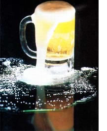
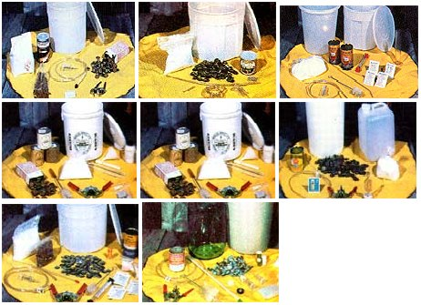
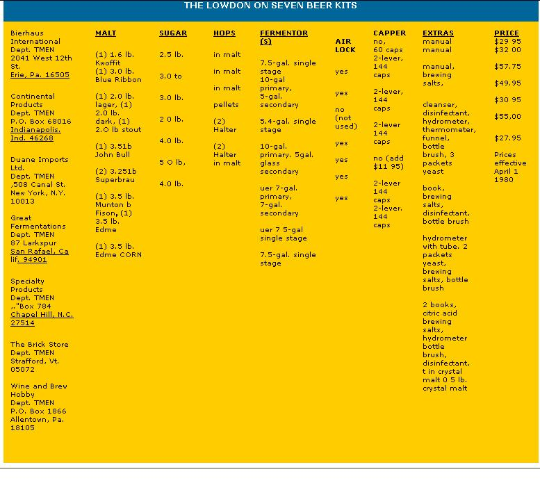

Issue # 64-July/August 1980
What could be more refreshing on a sultry summer afternoon?
To all too many folks, the word "homebrew" calls up memories of some vile concoction that Dad (or maybe Grandad) used to whip up and store in a chilly basement corner. But, for a growing number of enthusiasts, home beermaking has become a means of producing delicious suds --taste of which is a far cry from the old prohibition brews"-that can be made without the numerous chemicals (and, in "gourmet" recipes, even without the large quantities of sugar) common to many of the commercial elixirs .. . and of preparing that beer for a fraction of the cost of "storebought"!
The credit for the tremendous improvements in the quality of the average batch of homebrew during recent years goes both to the increasing availability of superior ingredients (which are, for the most part, imported) and to the spread of knowledge about more sophisticated brewing techniques. Newsletters, local home-beermaking shops, and mail order businesses have helped to get the word out . . . and lately, a number of homebrewing kitswhich include all the equipment and supplies a neophyte needs in order to get started-have appeared on the market.
The beermaking kits impressed MOTHER's staff as being potentially practical ways for newcomers to get started in brewing, so we ordered seven different setups and cooked a batch with each one. Without delving too deeply into exact procedures-which were explored in Don Beesley's article on homebrewing on page 58 of MOTHER NO. 56-we'd like to relate what we found out about the mail order minibreweries.
The primary piece of brewing paraphernalia is a fermenting vat. Traditionally, brewers have used an open container for the first few days of very active bubbling, and then switched to a sealed secondary fermentor--a tub or bottle equipped with an air lock to allow escape of carbon dioxide without letting outside air infor the following slower, less violent period of fermentation. However, the substitution of a single airtight vessel for the entire fermentation cycle has recently become popular, because the method reduces labor and lessens the chance of contamination.
On the other hand, advocates of the old standby approach feel that the opportunity to siphon the brew away from the cloud inn sediments which inevitably fall to the bottom of both fermentors, is well worth the extra effort. In addition, they point out that a well-managed double-stage beer will, in fact, have little possibility of contamination.
The kits offered by Bierhaus, The Brick Store, and Wine and Brew Hobby are set up for the newer single-stage system, and - though we did find more sediment in the bottles after brewing-the simplified procedure didn't seem to affect either the taste or the clarity of the beers.
Great Fermentations, Continental Products, and Specialty Products use the twostage method to good effect . . . although we did find the first-listed concern's glass jug secondary fermentor easier to keep tabs on during siphoning than were the more commonly used plastic containers. Our seventh candidate, Duane Imports, provides only a single-stage unsealed fermentor. We admit to having been a little concerned about the possibility of contamination entering the unsealed container, but the beer fared well in its cheesecloth-covered bucket, and its taste was untainted.
Once a brew has reached fruition, the solution must be transferred to crownrannable bottles and sealed. All of the kits come with siphons, but four of the items were not particularly effective ... because of a restrictive tubing junction that made it difficult to establish and maintain flow. The siphons offered by Duane Imports, Great Fermentations, and Wine and Brew Hobby worked best.
Five of the companies supply a doublelever capper and a gross (144) of crown caps, which should be a sufficient number of lids for at least three batches. The Bierhaus kit contains 60 caps but no capper, and Specialty Products offers a doublelever capper and 150 caps for an additional $11.95 over the kit's base price.
The outfits from Duane, Specialty, and The Brick Store include a hydrometer . . . a device that measures specific gravity and helps the brewer accurately pinpoint the proper time for bottling. The same three companies-as well as Great Fermentationsprovide bottle brushes, too . . . but only the Great Fermentations scrubber has the proper bristles to reach into the nooks and crannies of a container's bottom. (Duane Imports also supplies a thermometer to determine the correct temperature for yeast inoculation ... which is really necessary only when one attempts advanced mashing techniques.)
All of the beermaking setups include easyto-follow instructions that should allow anyone with basic cooking experience to prepare beer successfully. Some kitssuch as those of Bierhaus, Continental, and Duanealso furnish slightly more ambitious manuals. The Great Fermentations kit is equipped with a Look written by one of the company's co-owners, Byron Burch, who is among the more successful and better known homebrewers in the United States. And The Brick Store slipped in two books on brewing in lieu of a recipe .. . one by Leigh P. Beadle and the other by Fred Eckhardt, both highly renowned home brewmasters.
Other useful small items are provided with some of the packages . . . including a special cleanser, disinfectants, and a funnel for priming. (Please consult the accompanying chart for details.)
Beer can be brewed from an amazing variety of fermentable organic matter, and many commercial American offerings contain high percentages of rice and/or corn. However, the beverage traditionally has been (and still is, in Europe) made predominantly from malted barley. Each of the seven kits we examined is supplied with at least one can of malted barley extract . . . a gooey substance which is processed from grain to allow for the easier extraction of starches.
To a great extent, the richness and flavor of a brew depends upon the quality and quantity of the malt extract used. In addition, if proper cooking procedures are observed, some of the starches in the malt will be converted to fermentable sugars . . . and therefore into alcohol.
However, the alcohol content of the beers we're reviewing is largely a result of the easily fermentable corn sugar that's added to the mash. In fact, the corn sugar does very little but produce alcohol . . . enabling the brewer to use less of the more expensive malt extract without losing the "Juice".
Still, the heart of any beer is its malt . . . and if you ask any two homebrewers which brand is best, you're almost certain to get two different answers and a lively discussion. Of the malts included in the seven kits, only Blue Ribbon (an American standby for decades) is produced domestically. The others-with the exception of Duane's Mountmellick, which is Irishare alt made in England. Duane's kit actually comes with three different types of malt extract: a lager, a dark, and a stout . . . allowing the new brewer to try his or her hand at making three different sorts of beer. (Both Specialty Products and The Brick Store supply enough malt and yeast to brew two batches of light-bodied beer.)
Only two of the distributors elected to include crystal malt in their packages . . . The Brick Store, and Wine and Brew Hobby. This substance-which is more properly known as caramelized malt-provides additional body and coloring when added to a boiling wort (as the cooking beer-to be is called). If, however, crystal malt is mashed at temperatures which will produce enzymes, it can also add to the homebrew's overall starch content . . . and therefore to its alcohol percentage.
The tart, tangy flavor that nips at the end of a beer drinker's tongue comes from plants called hops. While the malt in a beer makes the beverage smooth and creamy, hops are the source of the characteristic taste that has inspired poems from connoisseurs and revulsion in nonbeerlovers. There are a number of hop strainseach of which produces a different flavorand most are grown in Europe. Therefore, they're frequently included in imported malt extracts ... or separately packaged in sealed containers to preserve their freshness.
Four of the kit suppliers chose to provide the convenient hopped malt extracts which have become widely available in the U.S.A. in the last ten years . . . while Great Fermentations, Specialty Products, and The Brick Store supplied hop pellets to add to the wort while it's cooking. The hopped extracts have been consistently improving (and Duane's Mountmellick malt produced a delightful aroma in the cooking process), but many beermakers still feel that supplementary hops pellets provide a better taste. (On the other hand, most experienced brewers would agree that fresh hops-when available-are superior to either pellets or hopped extract.)
Fermentation, as most of you know, is accomplished by single-celled fungi called yeast, and each of our seven kits contained the appropriate types and amounts of the useful little plants. Yeasts are divided into two varieties-lager (bottom fermenting) and ale (top fermenting)-and most of the suppliers who identified their yeasts indicated that they had chosen the lager variety. The relative merits of each are open for discussion: Lagers are slower acting, work better in cool temperatures, and produce subtle light beers. Ale yeast is more hardy and less subject to contamination, works better at warmer temperatures and yields a more pungent beverage.
Some brewers also add mild water conditioners to their fermenting mixtures . . . to provide a proper pH environment for healthy yeast growth and to encourage efficient starch conversion. Duane Imports, Great Fermentations, Specialty Products, and The Brick Store all provide water salts ... and we recommend such helpers to folks whose household water is soft.
After we'd brewed up a batch of each beer exactly according to the distributor's
instructions (we used a Leigh P. Beadle recipe for The Brick Store kit) and aged them for 25 days, we cracked open samples for a panel of seven testers.
Though the preferences expressed by our group of tipplers were diverse, the evaluators produced several valuable generalizations. For example, all of our tasters preferred the Wine and Brew Hobby mixture over the other homebrews . . . but only by a scant margin. A most interesting result was that a widely available American commercial brew-added as a control-finished quite high in the flavor category . . . and was, in fact, preferred by many.
Longer aging likely would have helped all of the homebrews reach their full potential. However, it's important for anyone contemplating the purchase of one of the kits to understand that the ingredients and recipes are meant only as starting points. Once you have the basic components necessary for brewing (which are available in any of the packages), you can either continue to produce the relatively economical beers-with sugar-derived alcohol contents-described above, or you can move on to more sophisticated malt recipes. Many homebrews have been acknowledged-by experts-to be good enough to challenge the finest imported beers, and you can produce such a sipping mixture for about the price of a bargain six-pack at the grocery. (If your interest is aroused, we'd suggest that you try the MOTHER-tested recipe in the accompanying sidebar.
To produce a rich, tangy ale--wellsuited to sipping on a soft summer evering-start by heating a gallon of water in a pot of at least two-gallon capacity. While the liquid warms, place two 3.5pound cans of Munton & Fison, Edme, or similar-quality malt extract in a separate container of hot water to liquify. (You can substitute 6 pounds of top-notch English dry maltavailable, from many beermaking supply shops-for the extract if you'd prefer to.)
Then sterilize your primary fermentor with either a dilute solution of household bleach or potassium metabisulfite. (The latter liquid is much easier to rinse out than bleach . . . although the lingering presence of either will significantly retard yeast growth.)
Once the water comes to a rolling boil, switch oil the heat momentarily and stir in the now-liquid contents of the two cans of malt extract. Only alter the malt is thoroughly dissolved should you turn the heat back on, since the gooey mass will otherwise tend to stick to the bottom of the pot and burn, thereby imparting an unpleasant flavor to the beer.
At this point, blend in a package of Burton wafer salts, 1 teaspoon of noniodized salt, and-if you have very soft water-1 teaspoon of gypsum. Continue heating to reestablish a rolling boil, but keep an eye on the pot: About 15 minutes after you turn the heat back on, the wart will begin to froth. Stir the liquid to keep the contents from overflowing, and the bubbles will soon recede.
After a 20-minute boil, add 1/2 pound of crystal malt and 1 ounce of fresh (or 113 ounce of pelletized) flavoring hops . . . such as Brewer's Gold, Bullion, Hallerfauer, or Northern Brewer. Soil the mixture for another 30 minutes, stirring it occasionally, and then add i more ounce of the same hops used above.
By now the bubbling solution should have filled your kitchen with some new and interesting smells. After boiling it far another 15 minutes, though, it's time to add the real scenfmakers. Stir in 1 ounce of aromatic hops-either Fuggle or Cascadeand boil for 15 minutes more. (If at all possible use a fresh hopCascade is widely available through beermaking suppliers-to provide the best aroma.) AT the end of the final 15-minute boil, add 1 more ounce of aromatic hops, and turn off the heat.
Now pour five gallons of cold water into the sterilized fermentor, and-if you'd like a slightly more potent brew and don't object to using processed sweeteners-stir a pound of corn sugar into the water. Then cover the top of the fermentor with two layers of cheesecloth, and pour the wort through the "screen" and into the vessel . . . to strain out the crystal malt and hops.
To accurately monitor the starch content of your wort, check the specific gravity by floating your sterilized hydrometer in the mixture. You should expect a reading of between 1.044 and 1.046 . . . which will yield about 4 to 5% alcohol.
By this time the temperature of the brew should be just about right for yeast inoculation, so sprinkle 1 package of ale (top-fermenting) yeast on the liquid. Let it sit for about 2 hours, and then stir the solution thoroughly. Now hide the fermentor in a dark corner-where it won't be bumped-and cover it.
Within 24 hours the beer should begin to bubble actively, and a cap of solids should form on the surface. When the
cap falls-some two to lour days alter brewingit's time to move to the secondary fermentor. Sterilize both the container and your siphon, and transfer the brew from the first vat to its second resting place. (Be careful to keep the siphon end off the bottom of the primary container . . . to avoid picking up sediments that have fallen to the bottom.) ', Stick a sterilized air lock info the neck of the fermentor, and set the assembly back in the dark corner.
While the beer works, keep an eye on the bubbling in the air lock to monitor the gradually decreasing fermentation activity. Once the bubbles have nearly stoppedbetween 1 and 2 weeks after brewingyou're ready to bottle. (You can confirm the completion of fermentation by measuring the brew's specific gravity. A reading of 1.010 to 1.012 is appropriate for this recipe.)
Siphon the beer back into the resterilized primary fermentor-again being careful to avoid picking up sedimentand boil 314 cup of corn sugar in two cups of water. When the sweetener has dissolved, mix the sugar/water solution into the beer ... it will provide just enough added food for the yeast to produce a nice bubbly brew when uncapped. You'll need between 48 and 54 twelveounce bottles to hold the contents of the fermentor, and you should leave about 1-1f2 inches of air space in each one.
Once you've capped the bottles, slip them back into the dark corner and resist temptation for at least three weeks: The longer the aging, the better the beer will taste. Your homebrew should be consumed from a glass . .. and when it's poured, it should be done in one gradual swing to avoid stirring up the sediments on the bottle's bottom. Other than faking that bit of care, there's nothing left to do but enjoy your masterpiece!
|
 STAFF PHOTOS CLOCKWISE FROM ABOVE: The various components belonging to the seven selected beer kits, which include Continental Products . . . Specialty Products . . . Wine and Brew hobby ... Bierhaus International . Duarte Imports . . The Brick Store . . . and Great Fermentations. |
 |
 |